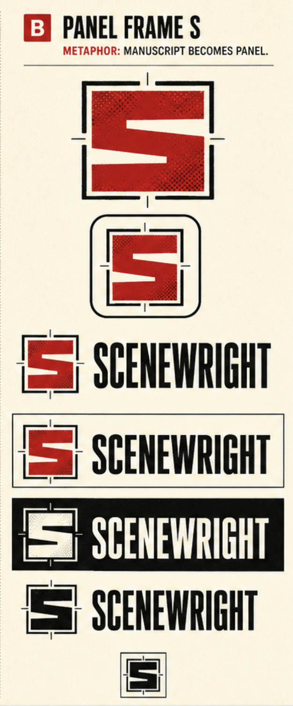
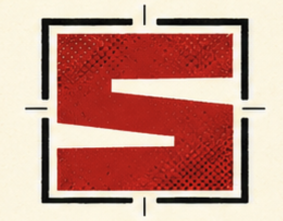

01 — THE MARK
Story, given structure.
A red manuscript field becomes an S through two white editorial cuts. Four registration brackets hold it like a panel under direction.
- Master
- 100 × 100 units
- Construction
- Flat paths + rectangles
- Texture
- Deterministic vector Ben-Day
- Minimum
- Micro master below 24 px
02 — SYMBOL SYSTEM
Production masters
Use the textured primary mark first. One-color art preserves the S as transparent negative space.


03 — REDUCTION
Judge it at the size it works.
The micro master drops the crop ticks, closes the frame, and widens both channels.

04 — LOCKUPS
Name with a measured voice.
The production lockups remain live text until a licensed local Anybody file is supplied for outlining.
SCENEWRIGHTSCENEWRIGHTSCENEWRIGHTLIVE TEXT / EDITABLE PREVIEW
05 — FIELD TESTS
Ink behaves differently on every sheet.
Choose a variant for contrast; never add effects to force the primary mark to fit.
06 — SPACING + GEOMETRY
Give the frame room to register.
Minimum clear space is one red-channel height around the mark.
CLEAR SPACE / 1×
07 — PALETTE
Pulp, pigment, ink.
The identity masters use four colors; sage and gold remain supporting product colors.
#B51822#1B1C15#FCFAED#FFFFFF#4A7C59#FAE36108 — SOURCE DIRECTION
Concept, then correction.
The source board establishes the metaphor and attitude. The vector system normalizes its frame, channels, color, and reductions.

